Captain America is a superhero known for his patriotism and strength. He was a frail man transformed into a super-soldier. His shield is a symbol of hope and liberty.
Steve Rogers: From Frail to Fearless : Steve Rogers, the man beneath the iconic Captain America mask, began as a frail but determined young man. Born in Brooklyn, New York, during the Great Depression, Rogers was rejected from military service due to his physical limitations. However, his unwavering patriotism and desire to serve his country led him to volunteer for a secret experiment.
The Super-Soldier Serum : The experiment, conducted by a team of scientists led by Dr. Abraham Erskine, involved the injection of a serum designed to enhance human capabilities. The serum, known as the Super-Soldier Serum, transformed Rogers into a peak specimen of human physical perfection. His body was strengthened, his reflexes were sharpened, and his stamina was increased exponentially.
The Birth of Captain America : With his newfound abilities, Rogers was outfitted in a specially designed costume and shield. He adopted the identity of Captain America, becoming a symbol of hope and freedom during World War II. His exploits, both on the battlefield and in covert operations, made him a national hero.
A Timeless Icon : Even after the war, Captain America remained active, fighting against various threats to the United States and the world. His iconic status has endured through decades, making him one of the most recognizable and beloved characters in the Marvel Comics universe. His unwavering commitment to justice, his ability to inspire others, and his enduring symbol of the American flag have solidified his place as a timeless icon.
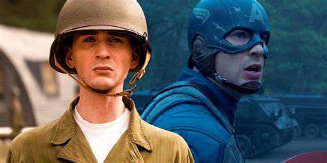1940s: Steve Rogers is selected for the Super-Soldier Serum and becomes Captain America.
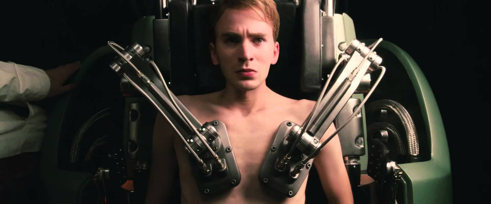1944: Captain America leads the Howling Commandos in a mission to rescue Bucky Barnes from Hydra.
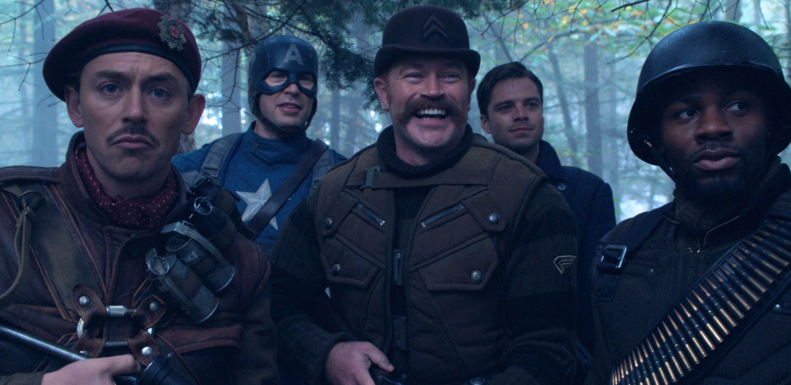1945: Captain America is frozen in ice after a battle with Baron Zemo.
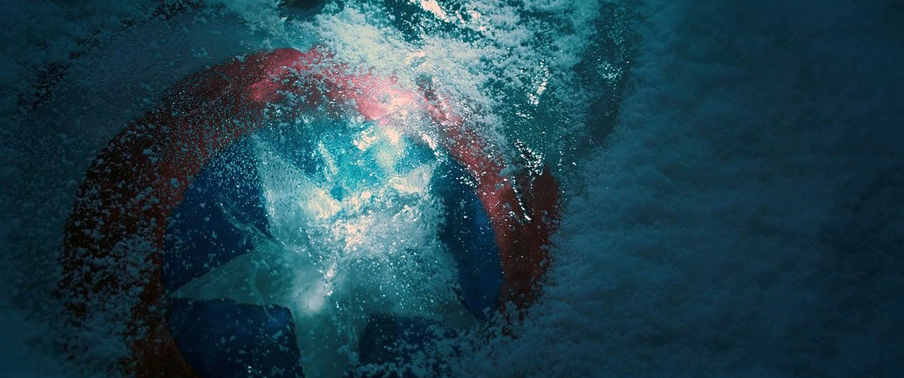1990s: Captain America is revived and joins the Avengers.
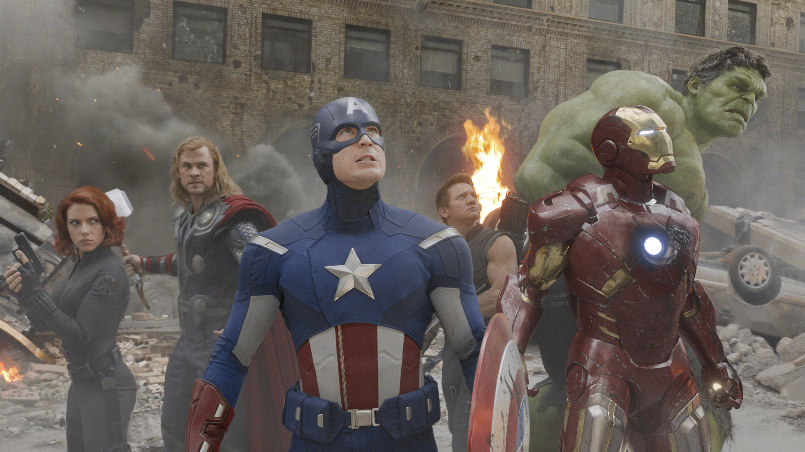2011: Captain America fights Loki and his alien army in New York City.
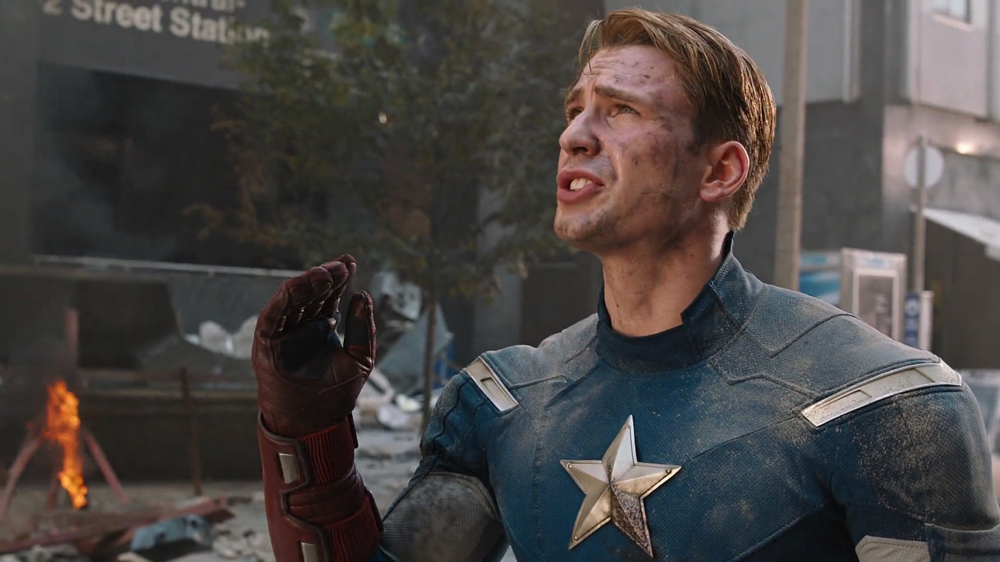2012: Captain America joins the Avengers in their battle against Ultron
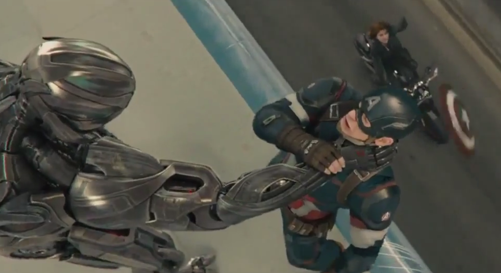2016: Captain America faces off against his former friend, Bucky Barnes, in a battle against Hydra.
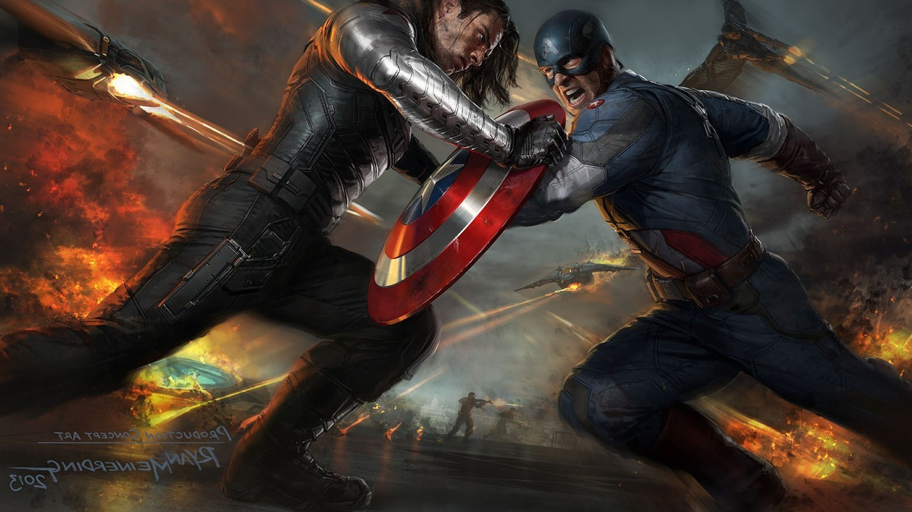2018: Captain America leads the Avengers in a battle against Thanos.
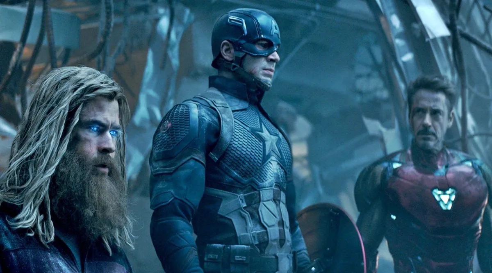2021: Captain America retires and passes the mantle of Captain America to Sam Wilson.
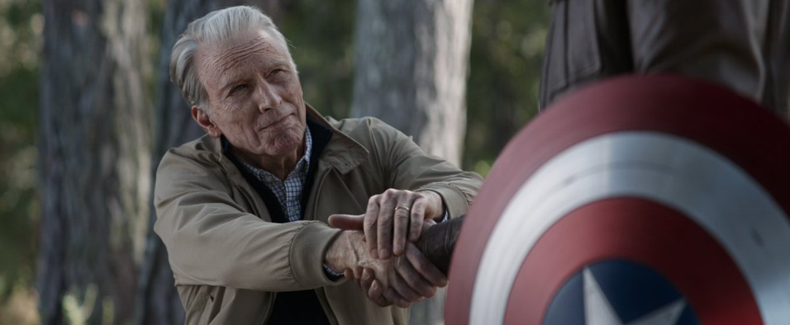"I can do this all day."
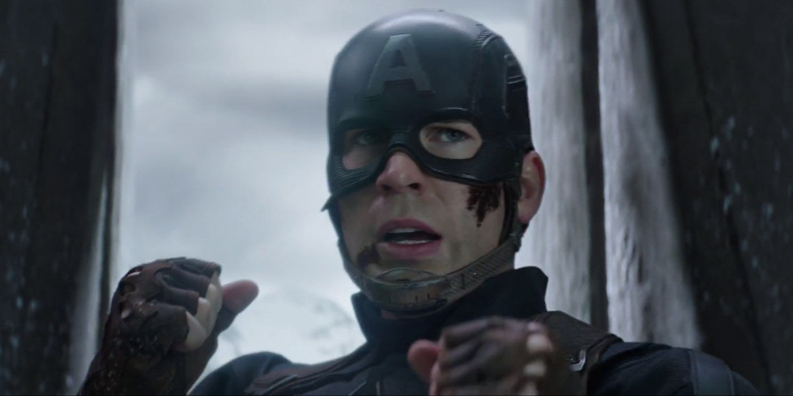
"Before we get started, does anyone want to get out?"
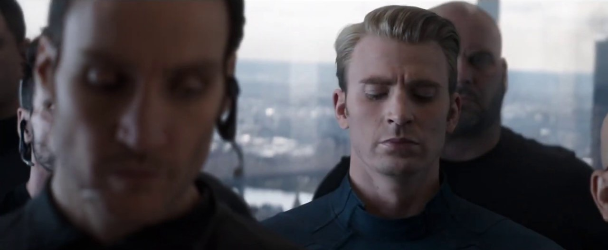
"If I see a situation pointed south, I can't ignore it. Sometimes I wish I could."
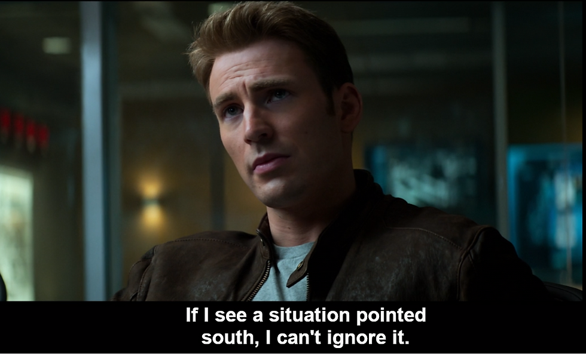
"I'm with you to the end of the line."
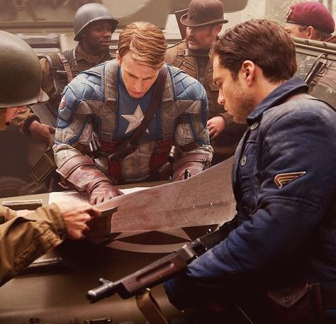
""No. You move."
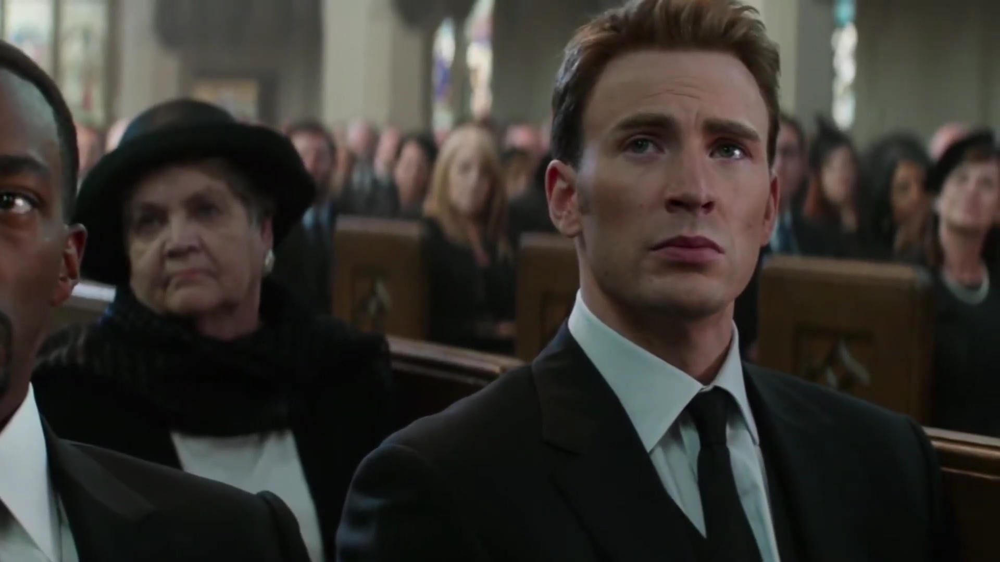
Captain America: A Symbol of Hope, Justice, and PerseveranceSteve Rogers, the embodiment of Captain America, has become a symbol of hope, justice, and perseverance. His unwavering optimism, commitment to the law, and resilience have inspired countless individuals to strive for a better world.
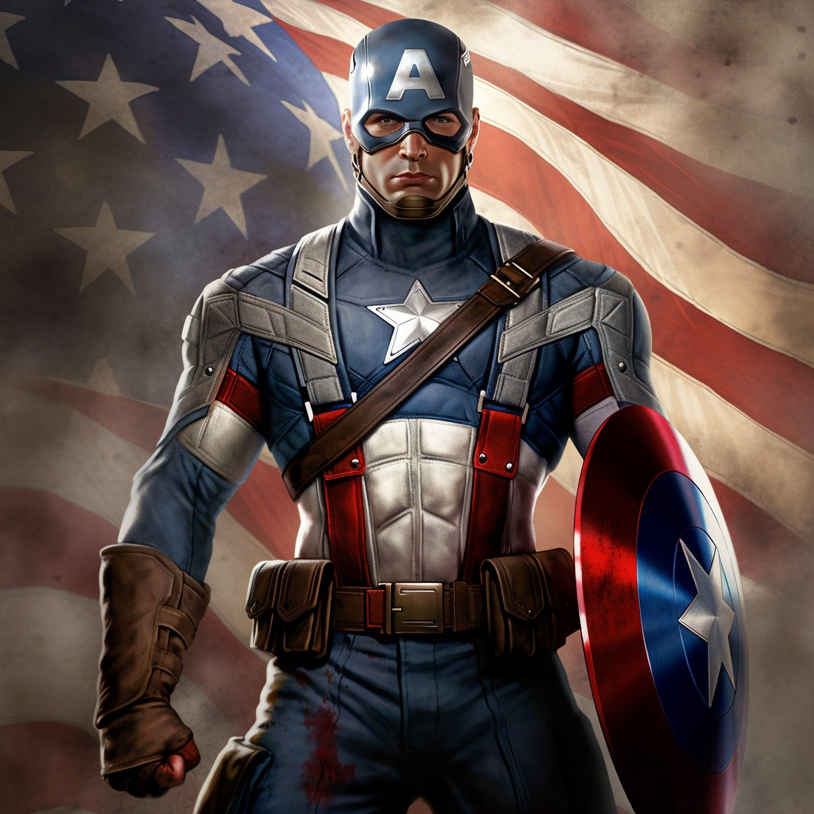